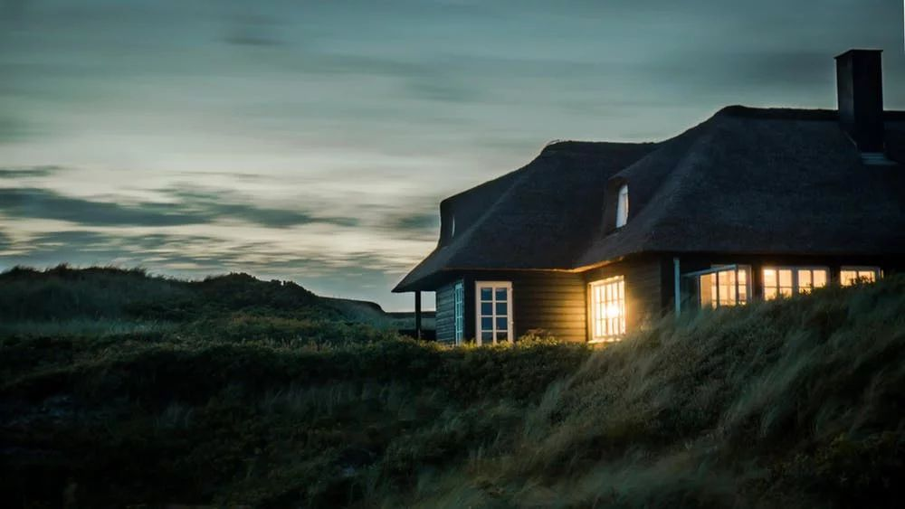

Masa Kecil

Fandi Meylwan Hasnur atau biasa dipanggil Fandi adalah seorang manusia yang tinggal dibumi,lebih
tepatnya disuatu daerah di Indonesia yang bernama Baubau, dia tumbuh dan besar disitu dan mengalami
masa kecil yang sama seperti anak-anak lain pada umumnya, seperti bermain sepakbola, bermain
kelereng, bermain layang-layang, bermain sepeda dan masih banyak lagi. Kehidupan Fandi kecil bisa
dibilang menyenangkan karena dia memiliki banyak teman bermain terlebih lagi jika sepupunya yang
mengajaknya bermain, pengingat mereka untuk selesai bermain adalah adzan magrib, karena saking
serunya mereka bermain sampai-sampai lupa waktu, hehe.
Hobi
Dia sangat suka dengan hal-hal yang baru, maka dari itu apabila ada sesuatu yang menarik dan belum
dia ketahui, dia akan mencari tahu hal tersebut dan mencoba mempelajarinya. Akhirnya banyak pula
hobi seorang yang namanya Fandi ini.
Mulai mengenal desain sejak SMA, dikenalkan oleh guru tentang software desain
grafis, yakni
CorelDraw dan sampai sekarang dia sangat menyukai desain grafis.
Desain Grafis
Pertama kali dia mengenalnya sebelum masuk perkuliah tapi
hanya dasar-dasarnya saja seperti HTML. Dan sekarang mulai belajar mendalaminya walau
tidak kuliah dijurusan IT.
Programming
Semenjak kenal dengan yang namanya internet, dia sangat suka untuk browsing
hal-hal yang
menarik, seperti video tutorial desain grafis yang ada di youtube, dan lain-lain.
Browsing
Setelah tau desain grafis, dia juga tertarik dengan video editing karena melihat
tutorial editing di youtube, semisal tutorial After Effect, itu membuatnya kagum.
Video Editing
Yang jelas dia sangat meyukai yang namanya teknologi, baik itu teknologi sekarang terlebih lagi
teknologi yang baru-baru dia ketahui.
Pendidikan
Dia memulai pendidikannya dibangku Taman Kanak-kanak dan memiliki banyak teman, begitupun ketika
ketika masuk Sekolah Dasar dia pun mempunyai banyak teman dan suka bermain dengan teman-temannya
hingga dilanjut ke jenjang Sekolah Menengah Pertama kemudian lanjut ke Sekolah Menengah Pertama dan
akhirnya setelah bertahun-tahun menjadi siswa ditahun 2017 dia pun pertama kali merasakan menjadi
mahasiswa karena dia diterima di salah satu Perguruan Tinggi di Makassar, dan dia masih menempuh
pendidikan perkuliahannya hingga sekarang.
Berikut daftar pendidikan Fandi dari Taman Kanak-kanak hingga Perguruan Tinggi.
| No |
Pendidikan |
Nama Sekolah / Instansi |